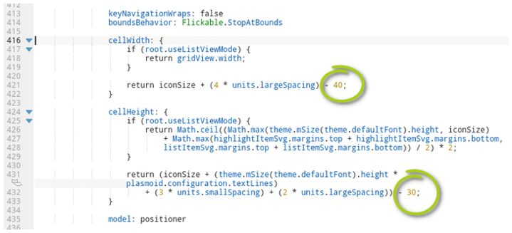

Obsah
KDE
Klavesove skratky
Konfiguracne subory
Konfiguracne subory sa nachadzaju
GLOBALNE: /usr/share/plasma/plasmoids/
LOKALNE: /home/nino/.local/share/plasma/plasmoids/ //POZNAMKA: idealne skupirovat GLOBALNE DO LOK a potom upravovat
ikony na ploche org.kde.desktopcontaiment plasmoid
Konfigurak:
/home/nino/.local/share/plasma/plasmoids/org.kde.desktopcontainment/contents/ui/FolderItemDelegate.qml
/home/nino/.local/share/plasma/plasmoids/org.kde.desktopcontainment/contents/ui/FolderView.qml

GNOME
i3
OPENBOX